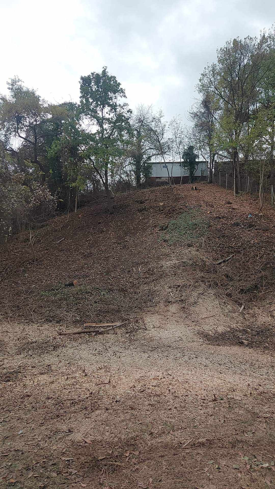

За Нас
"ТОП АРБОРИС" ЕООД е фирма, чиято основна дейност е премахването и рязането на опасни дървета и клони. Екипът ни се състои от професионалисти, които са преминали през обучение и допълнителна квалификация в Англия, с което можем да Ви гарантираме за успешно изпълнение на всяка една задача, която ни бъде поставена. Обслужваме частни и физически клиенти в цяла България.
Ние залагаме на професионално изпълнение на всички наши услуги, свързани с поддръжка, подрязване, изрязване на дървета и храсти, коректност, качествена работа, спазване на срокове и достъпни цени. Ще се погрижим за вашите дървета и ще получире помощ при тяхната поддръжка и отглеждане.
Цената се определя с оглед или изпратена снимка на обекта.
Фирмата ни разполага със следната техника:
- автовишка, която достига височина 20 метра
- професионална дробилка за клони и транспорт
- множество специализирани инструменти за професионални алпийски услуги
- над десет различни моторни триони
- преносима електрическа лебедка
- преносима електрическа лебедка
- преносима електрическа лебедка
- високо проходим джип оборудван със специализирана лебедка
Услуги
-
Рязане на опасни дървета с автовишка
-
Рязане на опасни дървета по алпийски способ
-
Оформяне на корона
-
Премахване на опасни клони
-

Почистване на терени
-
Професионална дробилка за клони
-
Специализирано рязане с автокран
-
Извозване на материала и транспорт със собствено камионче
-
Градинарски услуги и изграждане
-
Грижа за дървета
-
Косене на големи тревни площи
-
Поддръжка, подрязване, изравняване на дървета и храсти